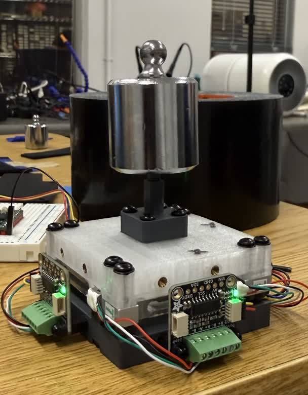

Sensor Structure


Affordable multi-axis force sensors are usually designed with a custom compliant part, and the deformation of that part is measured after a load is applied. Any creep, hysteresis, or thermal sensitivity in that part then becomes a property of the finished sensor. Its accuracy then depends on operating temperature and load history in ways a single calibration cannot capture. We instead developed a sensor using four commercial load cells that are manufacturer-characterized to carry the full load. On top of the mechanical design, one fitted matrix that maps readings to force accounts for assembly tolerances, gain differences, and wiring polarity. The resulting three-axis sensor costs under $120 and has a 2.6–3.5 mN noise floor. Off-axis leakage remains below 1 %, and lateral hysteresis remains below 0.5 % of span. After one scale factor, its output agrees with a commercial reference to 1.0–2.5 % of full scale across more than 300,000 in-contact samples. The design suits tools whose contact point is known and makes an accurate three-axis sensor accessible to any research lab with a 3D printer.



@inproceedings{feng2026lc3axis,
title = {An Accurate Three-Axis Force Sensor Assembled with Readily Available Off-the-Shelf Components with No Designed Compliant Element},
author = {Feng, Lucas and Slepyan, Ariel and Murthy, Krishna and Thakor, Nitish},
booktitle = {IROS 2026 Workshop on Sensors and Actuators for Dexterous Manipulation},
year = {2026}
}